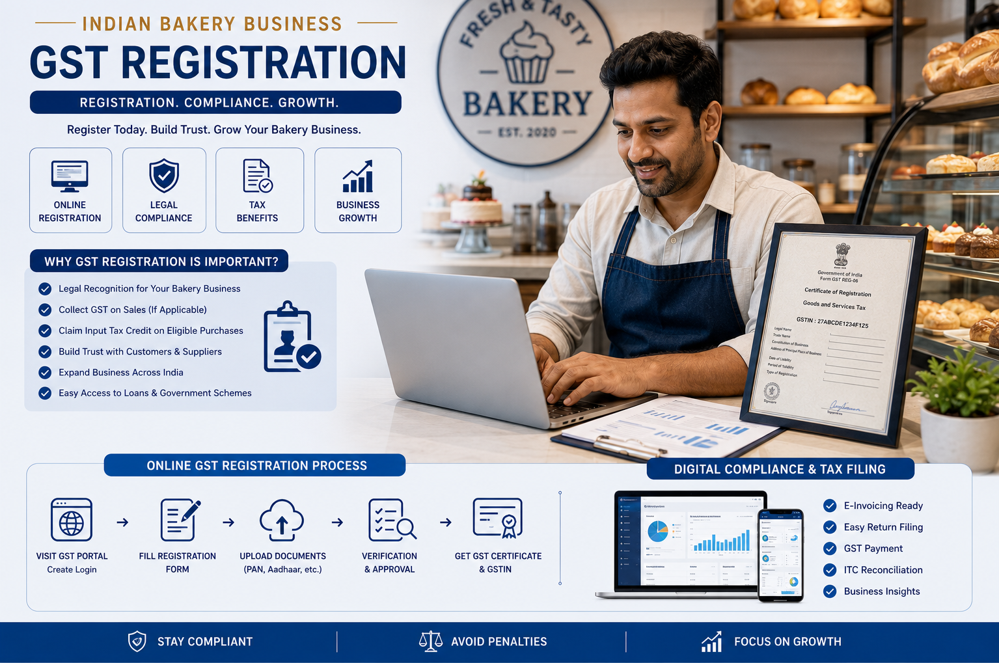
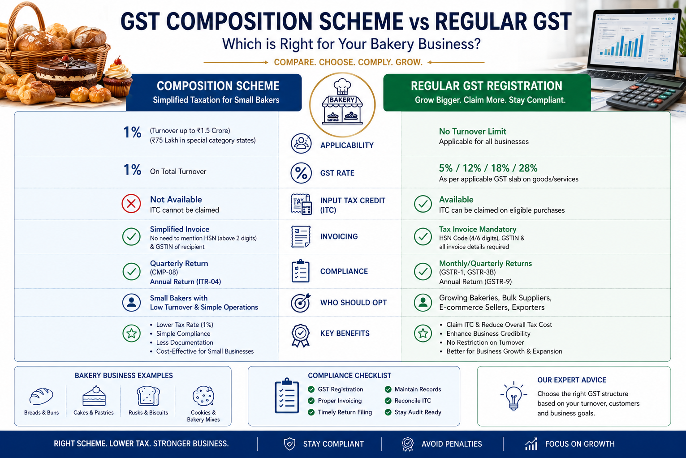
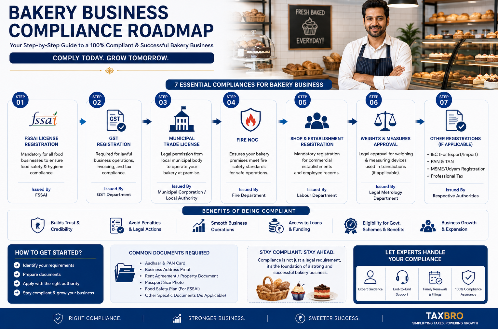
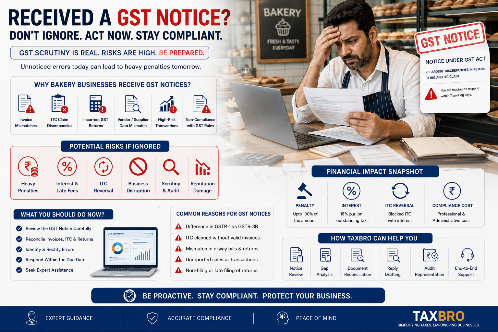

Bakery compliance changes with product, packaging and sales channel.
A bakery business in India operates under a framework that goes beyond food production and retail sales. Depending on the products sold, a bakery may deal with multiple GST rates, food safety regulations, local municipal licensing and employee-related compliances at the same time.
The GST treatment is not always uniform. Products that appear similar commercially can attract different rates based on classification, packaging, branding, ingredients and whether they are sold as goods, served for consumption, or supplied through a cafe, takeaway counter or delivery platform.
HSN 1905 is common, but the rate still needs product-level review.
Many bakery products sit under HSN 1905, but GST treatment can vary. Incorrect HSN reporting remains one of the most common reasons for GST disputes in food businesses.
| Bakery product | Common HSN reference | Practical GST note |
|---|---|---|
| Bread, branded or otherwise, except when served for consumption and except pizza bread | 1905 | Generally exempt in CBIC schedules, but sale mode and product description matter. |
| Pizza bread | 1905 | Generally appears in the 5% bucket. |
| Rusks, toasted bread and similar toasted products | 1905 40 00 | Generally appears in the 5% bucket. |
| Pastry, cakes, biscuits and other baker's wares | 1905 | Often taxable at 18%, subject to the specific exceptions in the rate schedule. |
| Confectionery such as toffees, candies and chocolates | 1704 / 1806 | Classify separately from bakery goods; ingredients and cocoa content can affect the code. |
| Prepared mixes and doughs for bakery wares | 1901 20 00 | Do not assume the finished-product rate applies to mixes. |
Registration is not just about one turnover number.
GST registration becomes mandatory once the prescribed threshold is crossed. It may also become necessary because of interstate supplies, e-commerce operations, platform sales or other special GST registration provisions.

Monitor monthly
Track taxable and exempt sales, cafe sales, online orders and wholesale invoices together.
Review e-commerce
Delivery platforms and online supply models can create additional registration and reporting checks.
Register before liability matures
Late registration can create tax, interest and penalty exposure from the original liability date.
Composition can work for small bakeries, but it limits growth paths.
Small bakery businesses may be eligible for the GST Composition Scheme, subject to turnover limits and prescribed conditions. It can reduce filing burden, but it is not automatically right for every bakery.

Why small bakeries consider it.
- Simplified GST compliance and return filing.
- Lower record-keeping burden.
- Fixed-rate tax payment on turnover.
Why expanding bakeries must be careful.
- Interstate supplies are restricted.
- Input Tax Credit cannot be claimed.
- GST cannot be collected separately from customers.
- Tax invoices cannot be issued by composition dealers.
- Certain e-commerce activities may not qualify.
GST registration alone is not enough for a bakery.
Food safety and local operating permissions are core to bakery compliance. The exact approvals depend on whether the bakery is home-based, retail-only, a cafe, a commercial kitchen, a manufacturer, or a packaged goods seller.

| Registration / licence | Why it matters |
|---|---|
| FSSAI registration or licence | Mandatory for food businesses; category depends on turnover, scale and activity. |
| GST registration | Required when GST law triggers registration because of turnover, supply type or business model. |
| Shop and Establishment registration | Required in many states for commercial establishments employing staff. |
| Municipal trade licence | Local permission to operate food business premises within the municipal area. |
| Fire NOC | Relevant for commercial kitchens and larger establishments depending on local rules. |
| Weights and Measures registration | Applicable where packaged goods are sold by weight or measurement. |
Company and LLP records should match the bakery's real activity.
For companies and LLPs, the selected NIC code should accurately reflect the primary business activity. This avoids future discrepancies across incorporation records, GST registration, licences and bank or vendor documentation.
| Record area | Control to maintain |
|---|---|
| Sales invoices and bills | GSTIN where applicable, FSSAI number, HSN, rate, quantity and product description. |
| Purchase records | Ingredient purchases, packaging material, vendor GSTIN, tax invoices and payment trail. |
| Delivery platform reports | Platform sales, commissions, TCS or TDS data where applicable, refunds and settlement records. |
| Food safety documents | FSSAI licence, hygiene records, batch details, labels and inspection correspondence. |
GST notices usually begin with classification or return mismatches.
Incorrect classification can result in excess tax collection, short payment, notices, interest and penalties. The risk rises when a bakery mixes retail, cafe, takeaway, online delivery and packaged goods sales without clear accounting separation.

Wrong product code
One broad bakery rate in software can create short payment across product categories.
GSTR mismatch
GSTR-1, GSTR-3B, sales reports and platform settlements should reconcile.
Unsupported credit
ITC should be backed by valid invoices, business use and vendor compliance.
Common bakery GST and compliance questions.
These answers are practical starting points. Always verify the final treatment against the exact product, supply model, state and latest GST or FSSAI update.
Is GST registration mandatory for every bakery?
Not always from day one. It becomes mandatory when GST law triggers registration through turnover, interstate supply, e-commerce activity or another special rule. FSSAI registration or licensing is a separate food-law requirement.
What HSN code applies to bakery products?
Many bakery products fall under HSN 1905, but not all products use the same rate. Bread, pizza bread, rusks, cakes, biscuits, mixes and confectionery should be reviewed separately.
Can a bakery use the GST Composition Scheme?
Small eligible bakeries may use it if turnover and activity conditions are satisfied. It may not be suitable where the bakery wants ITC, interstate supply, regular tax invoices or certain online sales.
Can a composition bakery charge GST separately on bills?
No. A composition dealer pays tax on turnover and cannot collect GST separately from customers or issue regular tax invoices.
Does a home bakery need FSSAI registration?
Yes, food business operators generally need FSSAI registration or licensing depending on scale, turnover and activity. A home-based model does not automatically remove food safety compliance.
Should the FSSAI number appear on bakery invoices?
FSSAI has required food businesses to declare the 14-digit FSSAI licence or registration number on receipts, cash memos, bills and food-sale documents.
Are online delivery platform sales treated differently?
They need separate review. Platform sales can affect registration, settlement reconciliation, TCS or TDS reporting and return matching, depending on the platform model and transaction flow.
What records should a bakery keep for GST notices?
Keep product-wise sales, HSN and rate mapping, purchase invoices, delivery reports, payment records, stock or production records, FSSAI documents and return reconciliations.
Need help mapping your bakery products?
Send the product list, packaging style, sale channel, turnover estimate and current invoices. TaxBro can help prepare a cleaner GST, FSSAI and billing checklist.